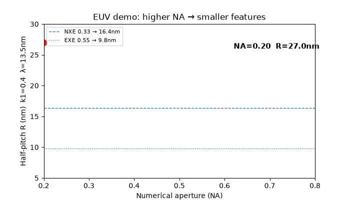

In one sentence: a from-scratch, runnable replica of the 6-week EUV course (light → source → mirrors → chips → measurement) that proves every claim with code and live public data — and found 4 hidden patterns.
NXE 0.33 NA → 16.4 nm half-pitch | EXE 0.55 NA → 9.8 nm | Mo/Si mirror 65.5% | 10-mirror chain ≈2% | NILS gain +26% | metrology 14.3×

Above: real output of experiments/make_demo_gif.py — every frame computed from R = k₁λ/NA, not drawn by hand. Video version: re-render with ffmpeg -i assets/demo.gif assets/demo.mp4 and attach to a GitHub Release, then link the thumbnail here (GitHub strips raw <video> tags — GIF is the native fallback).
pip install -r requirements.txt python experiments/make_demo_gif.py # → assets/demo.gif (60 frames) python experiments/run_all.py # → EXP-01…05 ALL PASS
Classroom use: project the GIF, pause at NA=0.33 and NA=0.55, ask students to predict the numbers before revealing 16.4 / 9.8 nm.
Light so energetic (91.8 eV, 13.5 nm) that air eats it and glass blocks it. So the whole machine lives in vacuum and uses only mirrors. That one fact explains 80% of the technology.
Shoot tin droplets with a CO₂ laser 50,000×/sec. The plasma flash contains EUV. Efficiency ≈5%. Collect it with a grazing mirror. Verified: 25 kW laser → ~600 W EUV (real tools: 250–500 W).
Stack 40–50 pairs of molybdenum/silicon, each ~7 nm thick. They reflect 65% by Bragg interference. Ten such mirrors in a row → only ~2% survives. That is normal and planned for.
Shine EUV through a reflective mask onto resist. Smaller wavelength + bigger NA = smaller features: 16.4 nm → 9.8 nm. Price: random photon noise (stochastics) and razor-thin focus (44 nm).
Use EUV itself as the ruler: scatterometry/reflectometry. Short wavelength = 14× sharper vision than old 193 nm light. Measurement is the control loop that makes factories yield.
High-NA moved from lab to factory: first processors shipped, >1M wafers, masks stitch today, bigger 12-inch masks by ~2031. The benchmark anchors every number to that reality.
Abbe resolution · LPP source power · multilayer knee · dose/stochastics/throughput · metrology + live HTTP checks. Each prints PASS/FAIL and writes CSVs.
docker compose up euvlab runs pytest + all experiments. Fixed requirements, deterministic seeds, offline-tolerant live checks.
Mirror saturation knee · dose-failure asymmetry · focus collapse · 14× metrology dividend — each with numbers, plots, and a falsifiable prediction.
docs/PAPER.md: 4-page short-paper draft with abstract, methods, results, predictions, references — ready to extend with RCWA/Fresnel solvers.
Matplotlib PNGs, animated GIF, and this self-contained preview.html (no internet needed) for sharing with non-coders.
Analytic proxies (not fab data), upper-bound throughput, incident-photon stochastics. Every limit is written down in benchmarks/BENCHMARK.md.
| You are… | Do this | You get |
|---|---|---|
| Student (Week 1–6) | Run exp01→exp05 in order, read the 🌱 cards | Intuition + numbers interview candidates lack |
| Teacher / TA | Project preview.html + demo.gif in lecture | 10-sec hook + pause-and-predict moments |
| Process engineer | Tweak dose/NA in exp04, read RLS asymmetry | Why NILS beats dose escalation |
| Optics researcher | Sweep bilayers in exp03, extend to Fresnel solver | Knee proof + a paper starting point |
| Hiring manager | Ask: “why 40–50 bilayers? why does DoF bind 0.75 NA?” | Two questions that separate memorisers from thinkers |
| Curious public | Open only this page + the GIF | Understand EUV without equations |
git clone https://github.com/YOU/euv-technology-benchmark-2026.git cd euv-technology-benchmark-2026 pip install -r requirements.txt python experiments/run_all.py # expect: EXP-01…05 ALL PASS python -m pytest -q # expect: 3 passed python experiments/make_demo_gif.py# expect: assets/demo.gif # Docker alternative: docker compose up euvlab
| System | NA | Resolution | Focus budget | Status |
|---|---|---|---|---|
| DUV 193 nm (reference) | 1.35 | 57.2 nm | 105.9 nm | computed |
| NXE (production) | 0.33 | 16.36 nm | 124.0 nm | PASS |
| EXE High-NA (HVM 2026) | 0.55 | 9.82 nm | 44.6 nm | PASS |
| Hyper-NA (roadmap) | 0.75 | 7.20 nm | 24.0 nm | computed |
Source: 25 kW → ~606 W (class of 250–500 W tools) · Mirrors: R50=0.655, 10-mirror T≈2% · Litho: fail 35%→12%→1.5% at 15/30/60 mJ · NILS +26% · Metrology 14.3×. Full tables: benchmarks/BENCHMARK.md, CSVs: data/processed/.
Resolution proof (Abbe, k₁=0.4). RET pushes products to 13/8 nm lines.
High-NA contrast gain reproduced exactly at 18 nm pitch.
EUV scatterometry advantage over DUV — the control loop dividend.
src/euvlab/ physics.py source.py optics.py litho.py metrology.py experiments/ exp01..exp05 + run_all.py + make_demo_gif.py data/processed/ exp01..exp05 CSVs (regenerated, never edited) data/raw/ live_snapshot.json (3× HTTP 200, dated) figures/ fig1_abbe fig2_multilayer fig3_rls (matplotlib) assets/ demo.gif (this page's animation) benchmarks/ BENCHMARK.md — tables + verdicts + limits docs/ PAPER.md — 4-page publishable draft preview.html this page (open directly in a browser)
Issues and PRs welcome: add an experiment (mirror it on exp01's assert style), keep live checks best-effort, never commit hand-edited CSVs. License: MIT — use freely, cite kindly. See LICENSE.